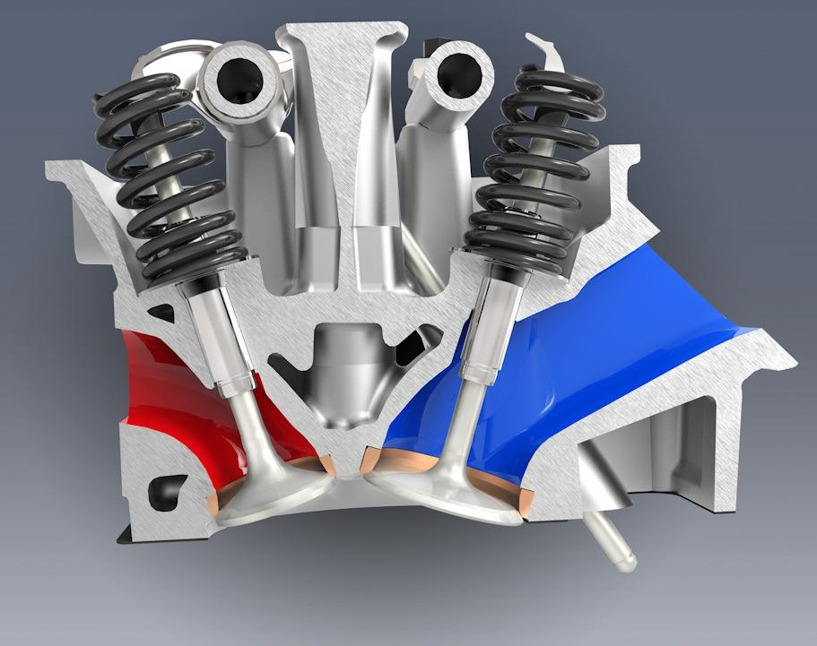
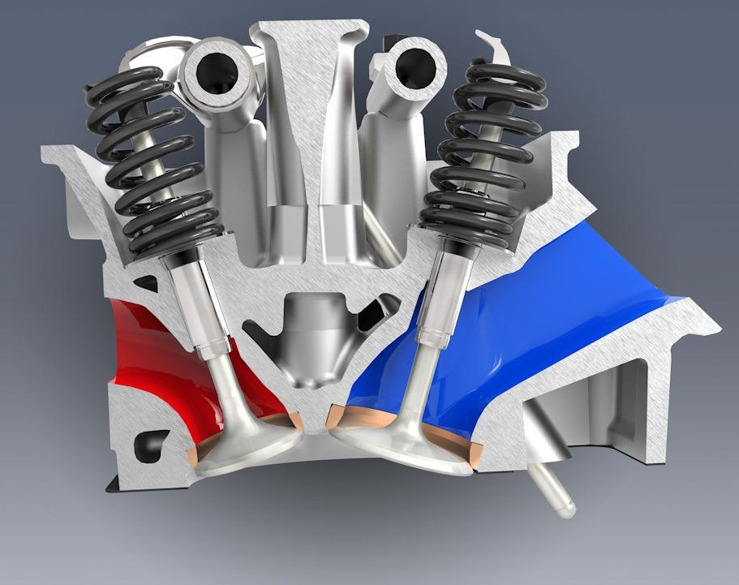

Valves
 

The valves prevent gasses from escaping during compression and combustion phases, yet allow gasses to enter and leave the combustion chamber during intake and exhaust stages. The image on the left is a cut away showing the top of the engine where the valves are located.